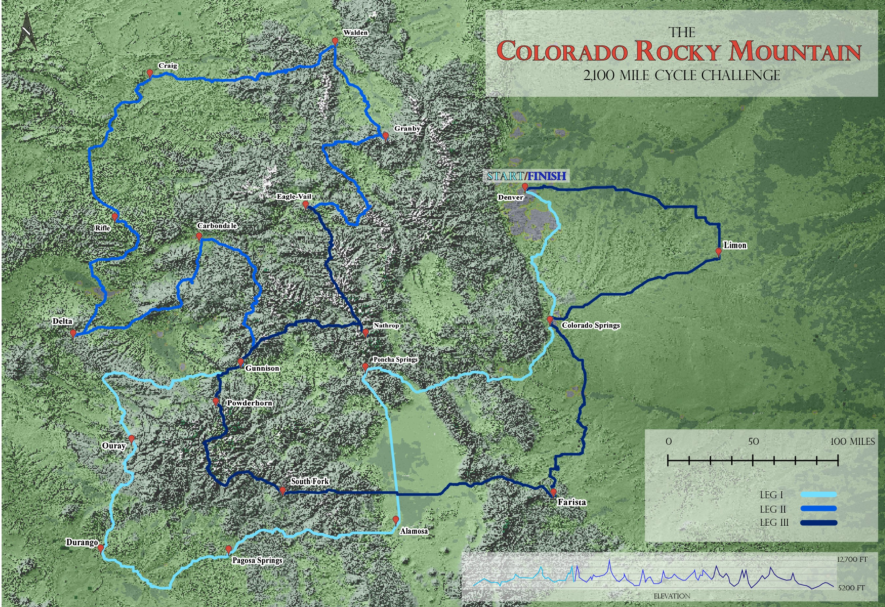
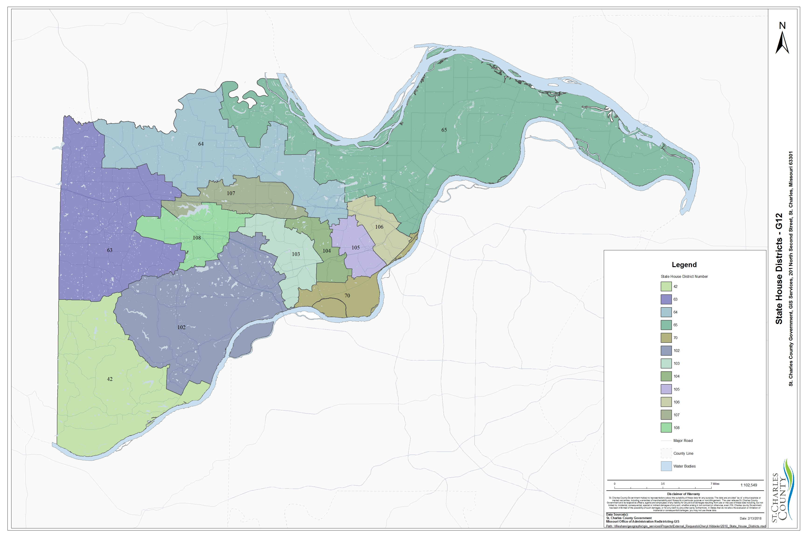

DEM Overlay
This map revolved around the combination of LCD (Land Coverage Determination), DEM (Digital Elevation Models), and hill shades to create a map that effectively expressed elevation change. The decision to turn this map into a “cycling challenge” was for added flare; it made the map more believable (and also, I am passionate about biking). This map displays my ability to work with Adobe Illustrator and Photoshop to develop maps that are “nice to look at”, but also effectively display data.

External Map Requests
This map displays one facet of my current work at the Saint Charles County GIS Office; external requests. Customers will contact the GIS office with requests (in this case, state house district boundaries). I am tasked with designing map that professionally display the information requested in a timely manner. This is one of several external requests I have fulfilled.
